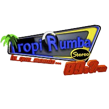

📻 Sintoniza Tropirumba Stereo

Tropirumba Stereo 89.7 FM
CHAT DE LA COMUNIDAD
Escribe para buscar GIFs...
Memes Clásicos
Juegos y Plataformas
CONOCE SUS PROGRAMACIONES
Tropirumba Stereo ofrece una variedad de contenidos informativos, culturales, deportivos, educativos, musicales y de entretenimiento, siempre pensando en nuestra gran audiencia.
Super Exitos
Días: Lunes a Viernes
Hora: 12:00 AM - 6:00 AM
Los mejores éxitos para empezar el día con energía.
1. Sin Fronteras
Días: Lunes a Viernes
Hora: 6:00 AM - 7:50 AM
Noticias, actualidad y análisis para empezar el día con información completa.
2. Vasilón de la Mañana
Días: Lunes a Viernes
Hora: 7:50 AM - 12:00 PM
Música tropical, entrevistas, concursos y el mejor humor para alegrar tu mañana.
3. Melodías del Pasado
Días: Lunes a Viernes
Hora: 12:00 PM - 1:50 PM
Revive los grandes éxitos de la música. Incluye el espacio de **Magazín Deportivo**.
4. Tardes Tropirumba
Días: Lunes a Viernes
Hora: 1:50 PM - 3:50 PM
La mejor selección de música tropical bailable para tu tarde.
5. Fiesta Vallenata
Días: Lunes a Viernes
Hora: 3:50 PM - 6:00 PM
Un espacio dedicado a lo mejor del Vallenato.
6. Inolvidables Tropirumba
Días: Lunes a Viernes
Hora: 6:00 PM - 7:50 PM
Música romántica y baladas para terminar la tarde.
7. Noche Rumbera
Días: Lunes a Viernes
Hora: 7:50 PM - 10:00 PM
La mejor música de fiesta y rumba para tu noche.
MAS MIX
Días: Lunes a Viernes
Hora: 10:00 PM - 12:00 AM
La mezcla perfecta para cerrar tu día.
MAS MIX (Madrugada)
Días: Fines de Semana
Hora: 12:00 AM - 5:50 AM
La mejor mezcla musical continua para acompañarte en la madrugada. **Sábados:** (6:50 AM - 9:10 AM)
9. El Tenampa
Días: Fines de semana
Hora: 9:50 AM - 12:05 PM
¡Música para disfrutar el fin de semana!
10. Vallenatos de Oro
Días: Sábados
Hora: 12:00 PM - 2:50 PM
Los clásicos inolvidables del Vallenato.
Explosion Musical
Días: Fines de semana
Hora: 2:50 PM - 4:50 PM
La mejor música para tus tardes de fin de semana.
MAS MIX (Noche)
Días: Fines de semana
Hora: 6:00 PM - 7:50 AM
La fiesta no para con la mejor mezcla nocturna.